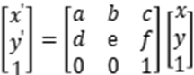
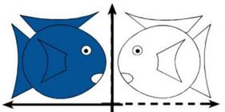
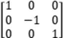
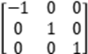
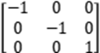

|
类型 |
几何变换 |
|
描述 |
计算图像的镜像，图像齐次坐标环变换公式：  下图是一个水平镜像，沿y轴翻转的示意图。  沿x轴翻转：  沿y轴翻转：  原点镜像：  别名：ZV_Mirror |
|
语法 |
ZV_ImpMirror(src,dst,type)
参数： src：ZVOBJECT类型，源图像为单通道或三通道图像 dst：ZVOBJECT类型，镜像后的图像 type：镜像类型：0-垂直镜像，以水平轴为翻转轴，即上下翻转；1-水平镜像，以垂直轴为翻转轴，即左右翻转；2-对角镜像，以主对角线为翻转轴，即水平轴和垂直轴都作为翻转轴，沿着两个轴都进行了翻转 |
|
适用控制器 |
支持ZV功能或者5系列以上的控制器 |
|
例子 |
ZVOBJECT src,dst ZV_ImgRead(src,"0.bmp",0) '以原图像格式读取图片 ZV_ImpMirror(src,dst,1) 'dst为生成源图像src水平镜像后的图像 |